Introduction to ggridges
Claus O. Wilke
2021-01-02
Source:vignettes/introduction.Rmd
introduction.RmdRidgeline plots are partially overlapping line plots that create the impression of a mountain range. They can be quite useful for visualizing changes in distributions over time or space.
Geoms
The ggridges package provides two main geoms, geom_ridgeline and geom_density_ridges. The former takes height values directly to draw ridgelines, and the latter first estimates data densities and then draws those using ridgelines.
Ridgelines
The geom geom_ridgeline can be used to draw lines with a filled area underneath.
library(ggplot2)
library(ggridges)
data <- data.frame(x = 1:5, y = rep(1, 5), height = c(0, 1, 3, 4, 2))
ggplot(data, aes(x, y, height = height)) + geom_ridgeline()
Negative heights are allowed, but are cut off unless the min_height parameter is set negative as well.
library(patchwork) # for side-by-side plotting
data <- data.frame(x = 1:5, y = rep(1, 5), height = c(0, 1, -1, 3, 2))
plot_base <- ggplot(data, aes(x, y, height = height))
plot_base + geom_ridgeline() | plot_base + geom_ridgeline(min_height = -2)Multiple ridgelines can be drawn at the same time. They will be ordered such that the ones drawn higher up are in the background. When drawing multiple ridgelines at once, the group aesthetic must be specified so that the geom knows which parts of the data belong to which ridgeline.
d <- data.frame(
x = rep(1:5, 3),
y = c(rep(0, 5), rep(1, 5), rep(2, 5)),
height = c(0, 1, 3, 4, 0, 1, 2, 3, 5, 4, 0, 5, 4, 4, 1)
)
ggplot(d, aes(x, y, height = height, group = y)) +
geom_ridgeline(fill = "lightblue")It is also possible to draw ridgelines with geom_density_ridges if we set stat = "identity". In this case, the heights are automatically scaled such that the highest ridgeline just touches the one above at scale = 1.
ggplot(d, aes(x, y, height = height, group = y)) +
geom_density_ridges(stat = "identity", scale = 1)Density ridgeline plots
The geom geom_density_ridges calculates density estimates from the provided data and then plots those, using the ridgeline visualization. The height aesthetic does not need to be specified in this case.
ggplot(iris, aes(x = Sepal.Length, y = Species)) + geom_density_ridges()There is also geom_density_ridges2, which is identical to geom_density_ridges except it uses closed polygons instead of ridgelines for drawing.
ggplot(iris, aes(x = Sepal.Length, y = Species)) + geom_density_ridges2()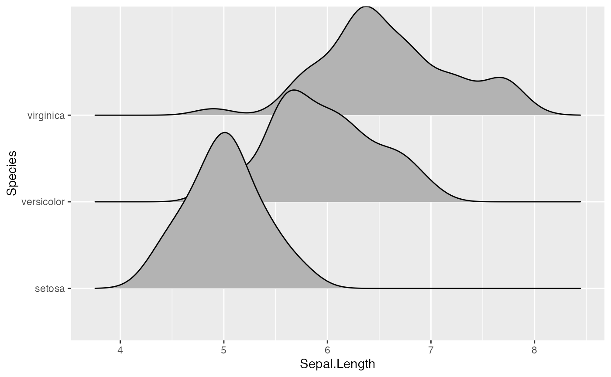
The grouping aesthetic does not need to be provided if a categorical variable is mapped onto the y axis, but it does need to be provided if the variable is numerical.
# modified dataset that represents species as a number
iris_num <- transform(iris, Species_num = as.numeric(Species))
# does not work, causes error
# ggplot(iris_num, aes(x = Sepal.Length, y = Species)) + geom_density_ridges()
# works
ggplot(iris_num, aes(x = Sepal.Length, y = Species_num, group = Species_num)) +
geom_density_ridges()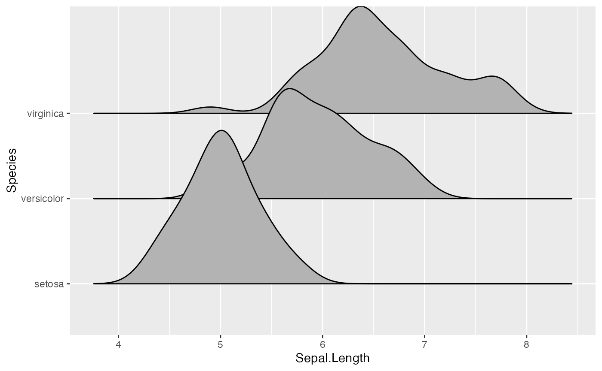
Trailing tails can be cut off using the rel_min_height aesthetic. This aesthetic sets a percent cutoff relative to the highest point of any of the density curves. A value of 0.01 usually works well, but you may have to modify this parameter for different datasets.
ggplot(iris, aes(x = Sepal.Length, y = Species)) +
geom_density_ridges(rel_min_height = 0.01)The extent to which the different densities overlap can be controlled with the scale parameter. A setting of scale=1 means the tallest density curve just touches the baseline of the next higher one. Smaller values create a separation between the curves, and larger values create more overlap.
# scale = 0.9, not quite touching
ggplot(iris, aes(x = Sepal.Length, y = Species)) + geom_density_ridges(scale = 0.9)
# scale = 1, exactly touching
ggplot(iris, aes(x = Sepal.Length, y = Species)) + geom_density_ridges(scale = 1)
# scale = 5, substantial overlap
ggplot(iris, aes(x = Sepal.Length, y = Species)) + geom_density_ridges(scale = 5)
The scaling is calculated separately per panel, so if we facet-wrap by species each density curve exactly touches the next higher baseline. (This can be disabled by setting panel_scaling = FALSE.)
ggplot(iris, aes(x = Sepal.Length, y = Species)) +
geom_density_ridges(scale = 1) + facet_wrap(~Species)Varying fill colors along the x axis
Sometimes we would like to have the area under a ridgeline not filled with a single solid color but rather with colors that vary in some form along the x axis. This effect can be achieved with the geoms geom_ridgeline_gradient and geom_density_ridges_gradient. Both geoms work just like geom_ridgeline and geom_density_ridges, except that they allow for varying fill colors. However, they do not allow for alpha transparency in the fill. For technical reasons, we can have changing fill colors or transparency but not both.
Here is a simple example of changing fill colors with geom_ridgeline_gradient:
d <- data.frame(
x = rep(1:5, 3) + c(rep(0, 5), rep(0.3, 5), rep(0.6, 5)),
y = c(rep(0, 5), rep(1, 5), rep(3, 5)),
height = c(0, 1, 3, 4, 0, 1, 2, 3, 5, 4, 0, 5, 4, 4, 1))
ggplot(d, aes(x, y, height = height, group = y, fill = factor(x+y))) +
geom_ridgeline_gradient() +
scale_fill_viridis_d(direction = -1, guide = "none")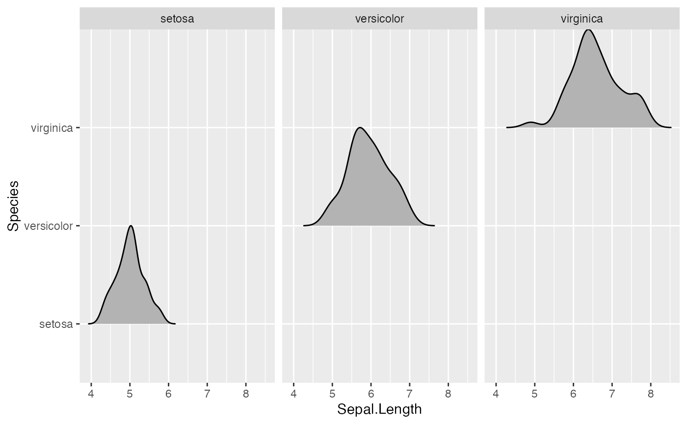
And here is an example using geom_density_ridges_gradient. Note that we need to map the calculated x value (stat(x)) onto the fill aesthetic, not the original temperature variable. This is the case because geom_density_ridges_gradient calls stat_density_ridges (described in the next section) which calculates new x values as part of its density calculation.
ggplot(lincoln_weather, aes(x = `Mean Temperature [F]`, y = Month, fill = stat(x))) +
geom_density_ridges_gradient(scale = 3, rel_min_height = 0.01) +
scale_fill_viridis_c(name = "Temp. [F]", option = "C") +
labs(title = 'Temperatures in Lincoln NE in 2016')Stats
The ggridges package provides a stat stat_density_ridges that replaces stat_density in the context of ridgeline plots. In addition to setting up the proper height for geom_density_ridges, this stat has a number of additional features that may be useful.
Quantile lines and coloring by quantiles or probabilities
By setting the option quantile_lines = TRUE, we can make stat_density_ridges calculate the position of lines indicating quantiles. By default, three lines are drawn, corresponding to the first, second, and third quartile:
ggplot(iris, aes(x = Sepal.Length, y = Species)) +
stat_density_ridges(quantile_lines = TRUE)We can change the number of quantiles by specifying it via the quantiles option. Note that quantiles = 2 implies one line (the median) at the boundary between the two quantiles.
ggplot(iris, aes(x = Sepal.Length, y = Species)) +
stat_density_ridges(quantile_lines = TRUE, quantiles = 2)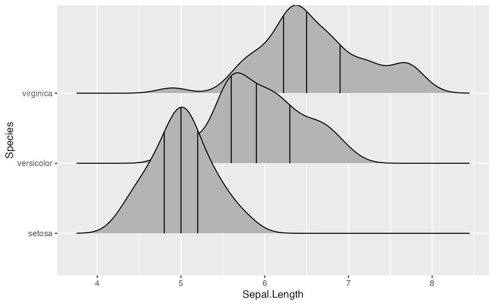
We can also specify quantiles by cut points rather than number. E.g., we can indicate the 2.5% and 97.5% tails.
ggplot(iris, aes(x = Sepal.Length, y = Species)) +
stat_density_ridges(quantile_lines = TRUE, quantiles = c(0.025, 0.975), alpha = 0.7)Using the geom geom_density_ridges_gradient we can also color by quantile, via the calculated stat(quantile) aesthetic. Note that this aesthetic is only calculated if calc_ecdf = TRUE.
ggplot(iris, aes(x=Sepal.Length, y=Species, fill = factor(stat(quantile)))) +
stat_density_ridges(
geom = "density_ridges_gradient", calc_ecdf = TRUE,
quantiles = 4, quantile_lines = TRUE
) +
scale_fill_viridis_d(name = "Quartiles")We can use the same approach to highlight the tails of the distributions.
ggplot(iris, aes(x = Sepal.Length, y = Species, fill = factor(stat(quantile)))) +
stat_density_ridges(
geom = "density_ridges_gradient",
calc_ecdf = TRUE,
quantiles = c(0.025, 0.975)
) +
scale_fill_manual(
name = "Probability", values = c("#FF0000A0", "#A0A0A0A0", "#0000FFA0"),
labels = c("(0, 0.025]", "(0.025, 0.975]", "(0.975, 1]")
)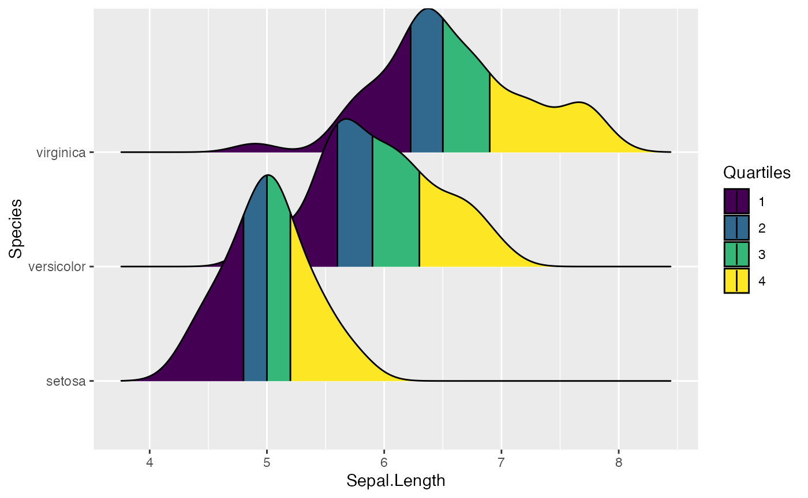
Finally, when calc_ecdf = TRUE, we also have access to a calculated aesthetic stat(ecdf), which represents the empirical cumulative density function for the distribution. This allows us to map the probabilities directly onto color.
ggplot(iris, aes(x = Sepal.Length, y = Species, fill = 0.5 - abs(0.5 - stat(ecdf)))) +
stat_density_ridges(geom = "density_ridges_gradient", calc_ecdf = TRUE) +
scale_fill_viridis_c(name = "Tail probability", direction = -1)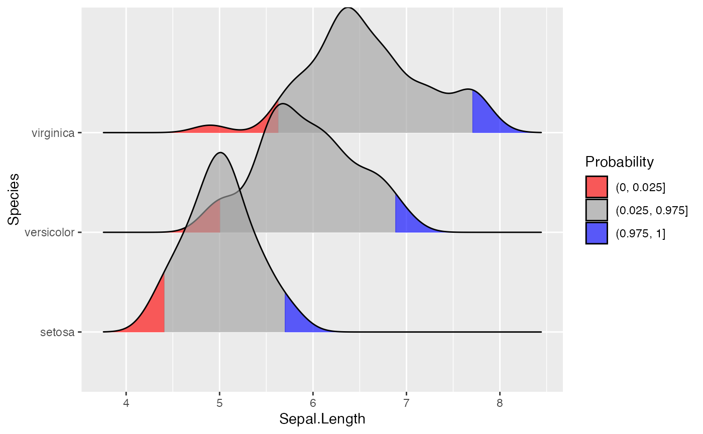
Jittering points
The stat stat_density_ridges also provides the option to visualize the original data points from which the distributions are generated. This can be done by setting jittered_points = TRUE, either in stat_density_ridges or in geom_density_ridges:
ggplot(iris, aes(x = Sepal.Length, y = Species)) +
geom_density_ridges(jittered_points = TRUE)
Where the points are shown can be controlled with position options, e.g. “raincloud” for the raincloud effect:
ggplot(iris, aes(x = Sepal.Length, y = Species)) +
geom_density_ridges(
jittered_points = TRUE, position = "raincloud",
alpha = 0.7, scale = 0.9
)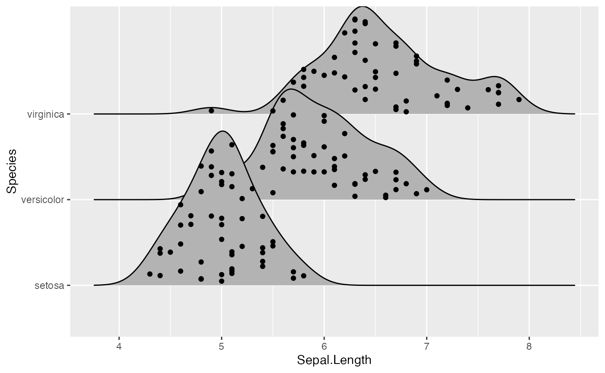
We can also simulate a rug:
ggplot(iris, aes(x = Sepal.Length, y = Species)) +
geom_density_ridges(
jittered_points = TRUE,
position = position_points_jitter(width = 0.05, height = 0),
point_shape = '|', point_size = 3, point_alpha = 1, alpha = 0.7,
)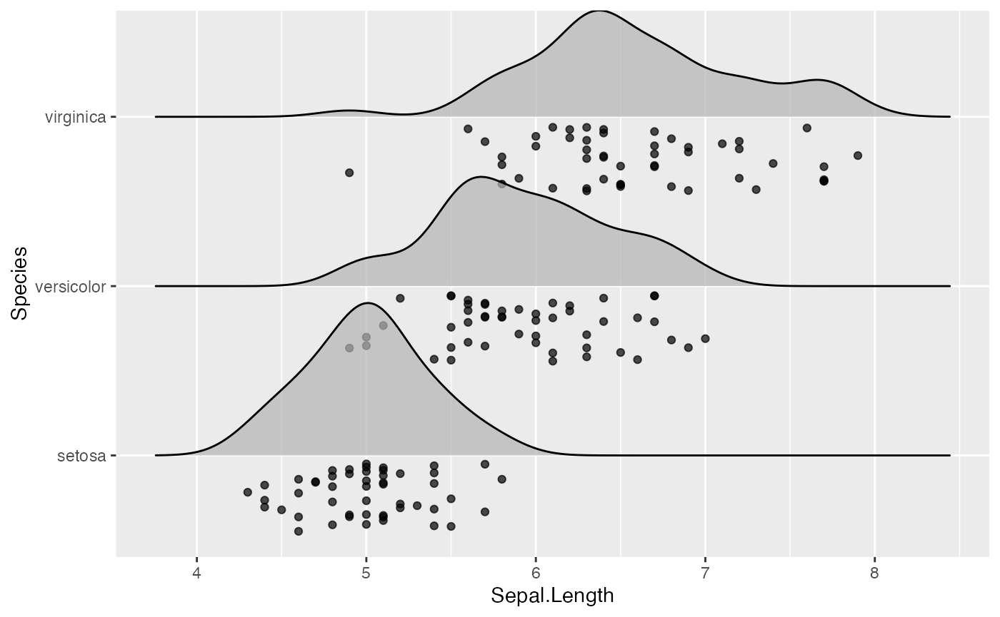
Note that we are using position_points_jitter() here, not position_jitter(). We do this because position_points_jitter() knows to jitter only the points in a ridgeline plot, without touching the density lines.
Styling the jittered points is a bit tricky but is possible with special scales provided by ggridges. First, there is scale_discrete_manual() which can be used to make arbitrary discrete scales for arbitrary aesthetics. We use it in the next example to style the point shapes. Second, there are various point aesthetic scales, such as scale_point_color_hue(). See the reference documentation for these scales for more details.
ggplot(iris, aes(x = Sepal.Length, y = Species, fill = Species)) +
geom_density_ridges(
aes(point_color = Species, point_fill = Species, point_shape = Species),
alpha = .2, point_alpha = 1, jittered_points = TRUE
) +
scale_point_color_hue(l = 40) +
scale_discrete_manual(aesthetics = "point_shape", values = c(21, 22, 23))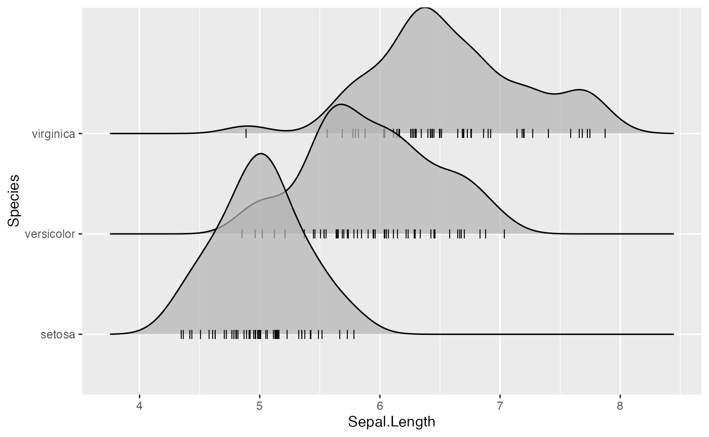
All common aesthetics for points can be applied to the jittered points. However, the aesthetic names start with point_. In the next example, we have mapped an additional variable onto the size of the points.
ggplot(iris, aes(x = Sepal.Length, y = Species, fill = Species)) +
geom_density_ridges(
aes(point_shape = Species, point_fill = Species, point_size = Petal.Length),
alpha = .2, point_alpha = 1, jittered_points = TRUE
) +
scale_point_color_hue(l = 40) + scale_point_size_continuous(range = c(0.5, 4)) +
scale_discrete_manual(aesthetics = "point_shape", values = c(21, 22, 23))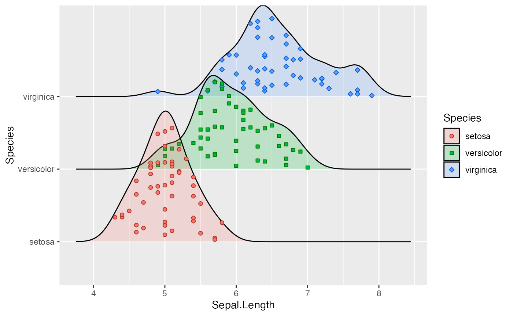
Similarly, we have aesthetics for the vertical lines, named vline_. And the vertical lines can also be shifted so they are aligned with the jittered points. This allows us to generate figures such as the following:
ggplot(iris, aes(x = Sepal.Length, y = Species)) +
geom_density_ridges(
jittered_points = TRUE, quantile_lines = TRUE, scale = 0.9, alpha = 0.7,
vline_size = 1, vline_color = "red",
point_size = 0.4, point_alpha = 1,
position = position_raincloud(adjust_vlines = TRUE)
)
Using alternative stats
The stat stat_density_ridges may not always do exactly what you want it to do. If this is the case, you can use other stats that may be better for your respective application. First, stat_density_ridges estimates the data range and bandwidth for the density estimation from the entire data at once, rather than from each individual group of data. This choice makes ridgeline plots look more uniform, but the density estimates can in some cases look quite different from what you would get from geom_density or stat_density. This problem can be remedied by using stat_density with geom_density_ridges. This works just fine, we just need to make sure that we map the calculated density onto the height aesthetic.
ggplot(iris, aes(x = Sepal.Length, y = Species, height = stat(density))) +
geom_density_ridges(stat = "density")Second, there may be scenarios in which you don’t want geom_density_ridges to do any density estimation, for example because you have done so already yourself. In this case, you can use stat_identity. The benefit of using geom_density_ridges with stat_identiy over using geom_ridgeline directly is that geom_density_ridges provides automatic scaling.
As an example, assume we have calculated density curves for the Sepal.Length column in the iris dataset:
library(dplyr)
iris_densities <- iris %>%
group_by(Species) %>%
group_modify(~ ggplot2:::compute_density(.x$Sepal.Length, NULL)) %>%
rename(Sepal.Length = x)
iris_densities## # A tibble: 1,536 x 7
## # Groups: Species [3]
## Species Sepal.Length density scaled ndensity count n
## <fct> <dbl> <dbl> <dbl> <dbl> <dbl> <int>
## 1 setosa 3.93 0.000869 0.000701 0.000701 0.0435 50
## 2 setosa 3.94 0.000973 0.000785 0.000785 0.0487 50
## 3 setosa 3.94 0.00109 0.000876 0.000876 0.0543 50
## 4 setosa 3.94 0.00121 0.000975 0.000975 0.0604 50
## 5 setosa 3.95 0.00135 0.00109 0.00109 0.0673 50
## 6 setosa 3.95 0.00150 0.00121 0.00121 0.0749 50
## 7 setosa 3.96 0.00166 0.00134 0.00134 0.0831 50
## 8 setosa 3.96 0.00184 0.00149 0.00149 0.0922 50
## 9 setosa 3.97 0.00205 0.00165 0.00165 0.102 50
## 10 setosa 3.97 0.00226 0.00183 0.00183 0.113 50
## # … with 1,526 more rowsWe can plot these as follows:
ggplot(iris_densities, aes(x = Sepal.Length, y = Species, height = density)) +
geom_density_ridges(stat = "identity")
Notice how this plot looks different from the one generated using stat = "density", even though the density computation was exactly the same: (i) The density curves extend all the way to zero. (ii) There is no horizontal line extending all the way to the limits of the x axis.
Finally, if you prefer histograms to density plots, you can also use stat_binline. Note that overlapping histograms can look strange, so this option is probably best used with a scale parameter < 1. The option draw_baseline = FALSE removes trailing lines to either side of the histogram. (For histograms, the rel_min_height parameter doesn’t work very well.)
ggplot(iris, aes(x = Sepal.Length, y = Species, height = stat(density))) +
geom_density_ridges(stat = "binline", bins = 20, scale = 0.95, draw_baseline = FALSE)Themes
ridgeline plots tend to require some theme modifications to look good. Most importantly, the y-axis tick labels should be vertically aligned so that they are flush with the axis ticks rather than vertically centered. The ggridges package provides a theme theme_ridges that does this and a few other theme modifications.
ggplot(iris, aes(x = Sepal.Length, y = Species)) +
geom_density_ridges() +
theme_ridges()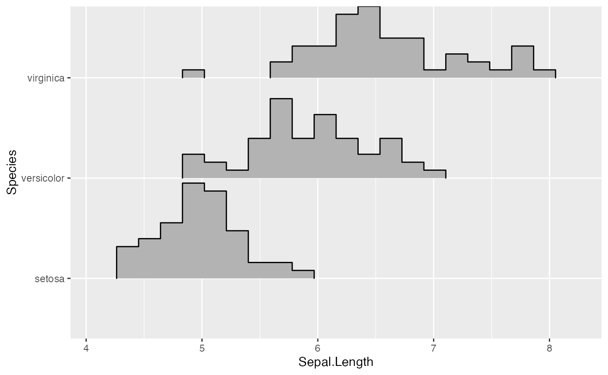
However, without any further modifications, there are still a few issues with this plot. First, the ridgeline for the virginica species is slightly cut off at the very top point. Second, the space between the x and y axis labels and the ridgelines is too large. We can fix both issues using the expand option for the axis scales.
ggplot(iris, aes(x = Sepal.Length, y = Species)) +
geom_density_ridges() +
scale_x_continuous(expand = c(0, 0)) +
scale_y_discrete(expand = expand_scale(mult = c(0.01, .7))) +
theme_ridges()Instead of expanding the axis, you can also turn off clipping for the plot panel.
ggplot(iris, aes(x = Sepal.Length, y = Species)) +
geom_density_ridges() +
scale_x_continuous(expand = c(0, 0)) +
scale_y_discrete(expand = c(0, 0)) +
coord_cartesian(clip = "off") +
theme_ridges()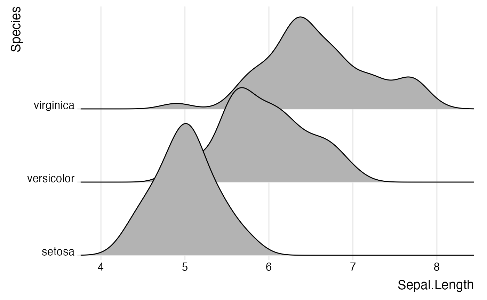
By default, theme_ridges adds a grid, but the grid can be switched off when not needed. Also, axis titles can be centered.
ggplot(iris, aes(x = Sepal.Length, y = Species)) +
geom_density_ridges() +
scale_x_continuous(expand = c(0, 0)) +
scale_y_discrete(expand = c(0, 0)) +
coord_cartesian(clip = "off") +
theme_ridges(grid = FALSE, center_axis_labels = TRUE)If you prefer to use a different theme than theme_ridges, for example theme_minimal, it is still advisable to adjust the alignment of the axis tick labels and the axis scales.
ggplot(iris, aes(x = Sepal.Length, y = Species)) +
geom_density_ridges() +
scale_x_continuous(expand = c(0, 0)) +
scale_y_discrete(expand = c(0, 0)) +
coord_cartesian(clip = "off") +
theme_minimal(base_size = 14) +
theme(axis.text.y = element_text(vjust = 0))Cyclical scales
Many ridgeline plots improve in appearance if the filled areas are drawn with alternating colors. To simplify the generation of such plots, ggridges provides cyclical scales. These are scales that cycle through the aesthetic values provided. For example, if we use scale_fill_cyclical(values = c("blue", "green")) then ggplot will cycle through these two fill colors throughout the plot.
ggplot(diamonds, aes(x = price, y = cut, fill = cut)) +
geom_density_ridges(scale = 4) +
scale_fill_cyclical(values = c("blue", "green"))By default, the cyclical scales will not draw a legend, because the legend will usually be confusing unless the labels are manually altered. Legends can be switched on via the guide = "legend" option, just like for all other scales.
ggplot(diamonds, aes(x = price, y = cut, fill = cut)) +
geom_density_ridges(scale = 4) +
scale_fill_cyclical(values = c("blue", "green"), guide = "legend")Legends can be modified as usual.
ggplot(diamonds, aes(x = price, y = cut, fill = cut)) +
geom_density_ridges(scale = 4) +
scale_fill_cyclical(
name = "Fill colors",
values = c("blue", "green"),
labels = c("Fair" = "blue", "Good" = "green"),
guide = "legend"
)Cyclical scales are defined for all the common aesthetics one might want to change, such as color, size, alpha, and linetype, and the legends are combined when possible
ggplot(diamonds, aes(x = price, y = cut, fill = cut, color = cut)) +
geom_density_ridges(scale = 4, size = 1) +
scale_fill_cyclical(
name = "Color scheme",
values = c("blue", "green"), guide = "legend",
labels = c("Fair" = "blue w/ black outline", "Good" = "green w/ yellow outline")
) +
scale_color_cyclical(
name = "Color scheme",
values = c("black", "yellow"), guide = "legend",
labels = c("Fair" = "blue w/ black outline", "Good" = "green w/ yellow outline")
)Because these cyclical scales are generic ggplot2 scales, they work with any geom that accepts the respective aesthetic. Thus, for example, we can make histograms with alternatingly colored bars.
ggplot(mpg, aes(x = class, fill = class, color = class)) +
geom_bar(size = 1.5) +
scale_fill_cyclical(
name = "Color scheme",
values = c("blue", "green"), guide = "legend",
labels = c("blue w/ black outline", "green w/ yellow outline")
) +
scale_color_cyclical(
name = "Color scheme",
values = c("black", "yellow"), guide = "legend",
labels = c("blue w/ black outline", "green w/ yellow outline")
)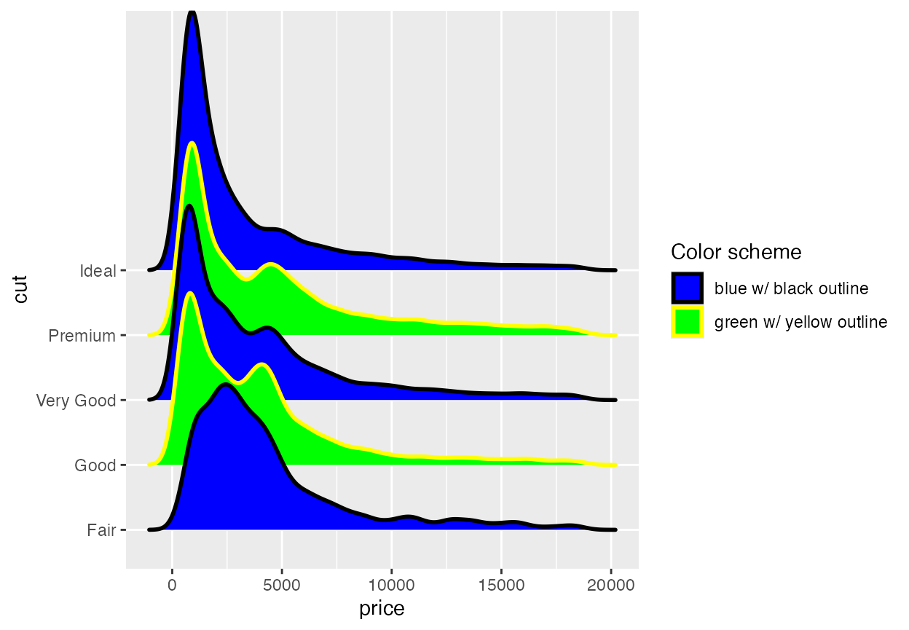
While the previous example won’t win any design awards, more subtle effects can be helpful.
mpg %>% group_by(class) %>%
tally() %>%
arrange(desc(n)) %>%
mutate(class = factor(class, levels = class)) %>%
ggplot(aes(x = class, y = n, fill = class)) +
geom_col() +
scale_fill_cyclical(values = c("#4040B0", "#9090F0")) +
scale_y_continuous(expand = c(0, 0)) +
theme_minimal()